Un program de educație pentru sănătate în asistența BFK
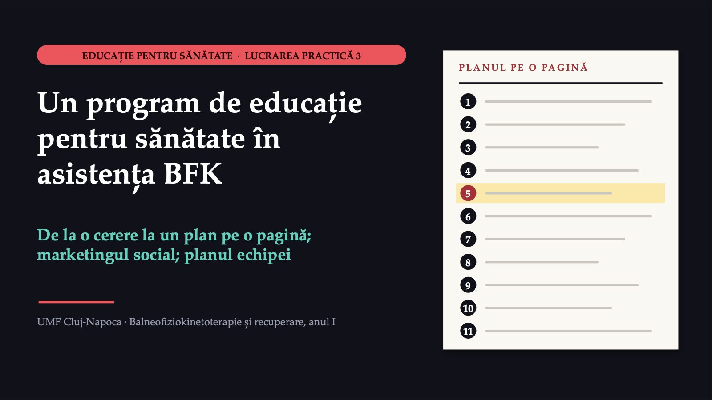
1 / 25Comuna care vrea mai puține căderi
![MENTIMETER · VOT DOUĂ LUCRURI SCHIMBATE DUPĂ RĂSPUNSURILE VOASTRE [le anunță cadrul didactic] Comuna care vrea mai puține căderi CAZ CONSTRUIT · CEREREA Primăria vrea un program de douăsprezece săptămâni pentru oamenii trecuți de șaizeci și cinci de ani. „O prezentare la căminul cultural, cu pliante, ținută de un kinetoterapeut.” Mulți locuiesc singuri; autobuzul trece de două ori pe zi. Care este primul pas corect, înainte să stabiliți exercițiile și calendarul? Mentimeter: intrați pe menti.com cu codul afișat pe ecran.](diapozitive/LP03/002.jpg) 2 / 25
2 / 25Răspunsul apare după ședință
Răspunsul apare după ședință
Cine rămâne pe dinafară?
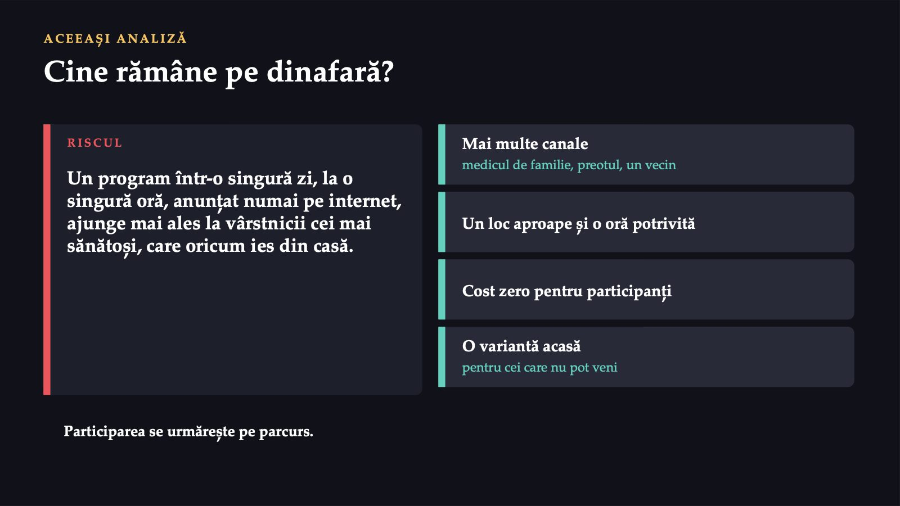
4 / 25116
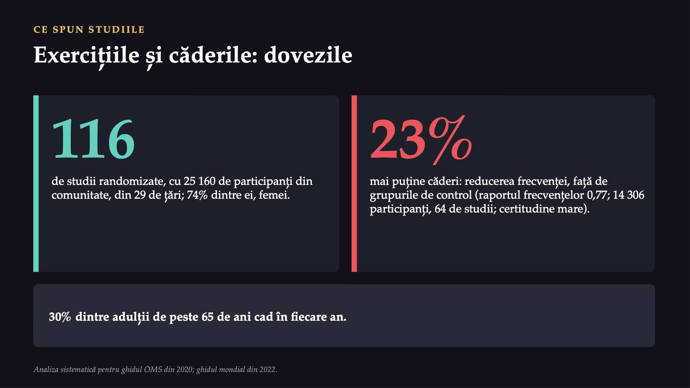
5 / 25Nu orice exercițiu are același efect
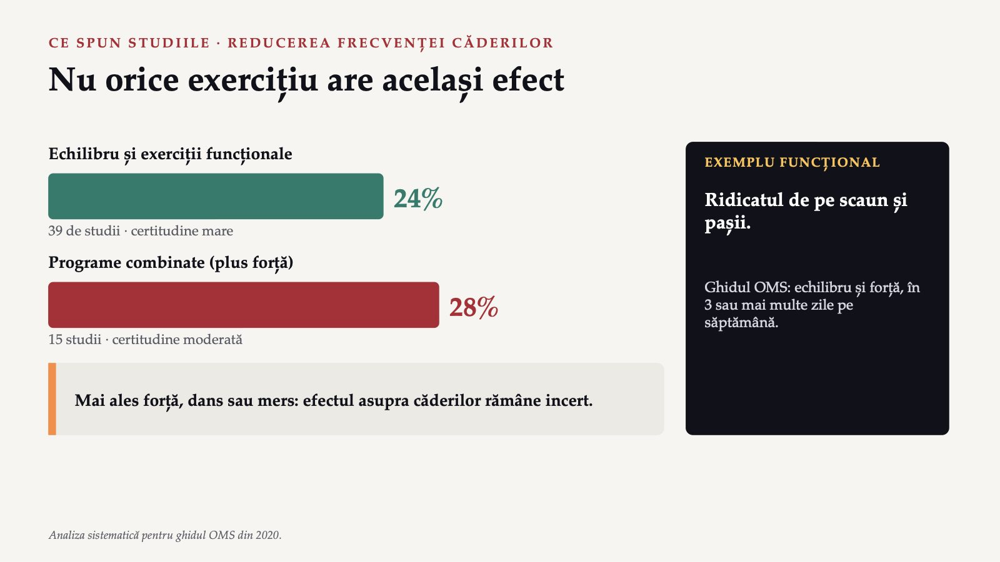
6 / 2542%
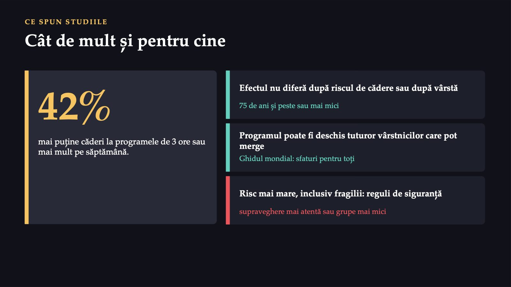
7 / 2560
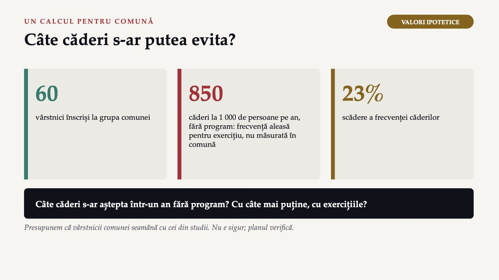
8 / 25Unsprezece rubrici, ca etapele din curs
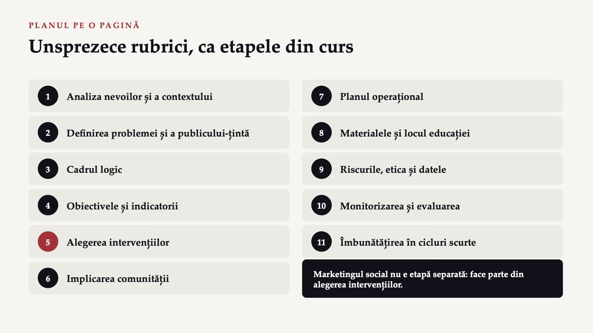
9 / 25De la nevoi la cadrul logic
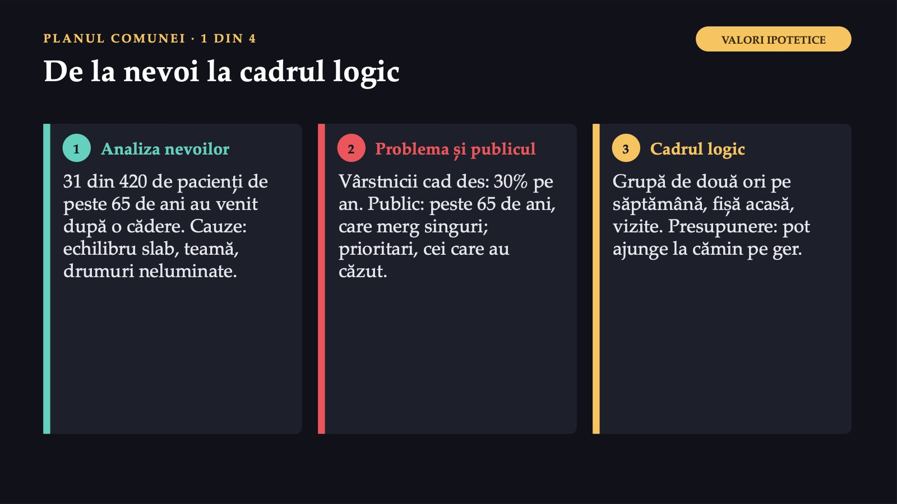
10 / 25De la obiectiv la comunitate
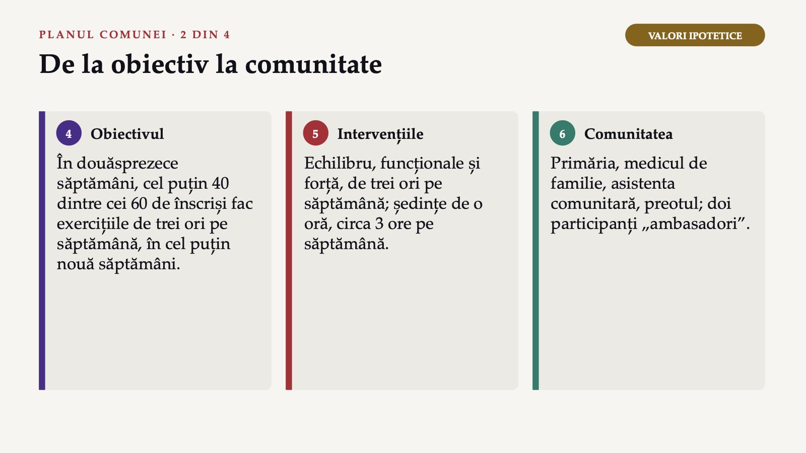
11 / 25Calendarul, materialele, riscurile
 12 / 25
12 / 25Măsurarea și primul test
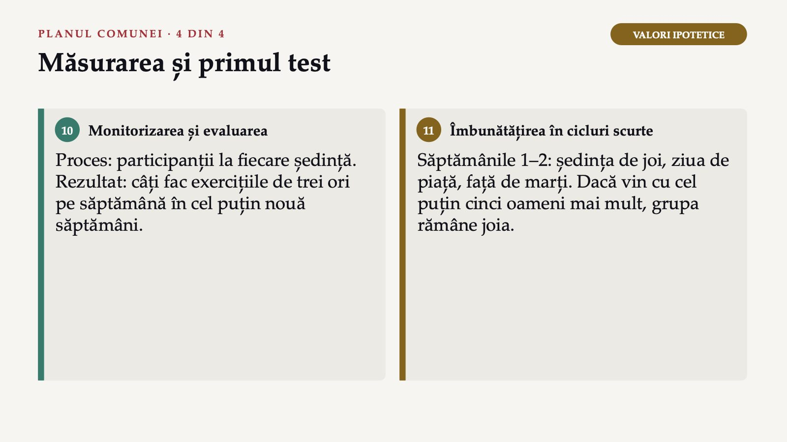
13 / 25Patru pași, o echipă, un telefon
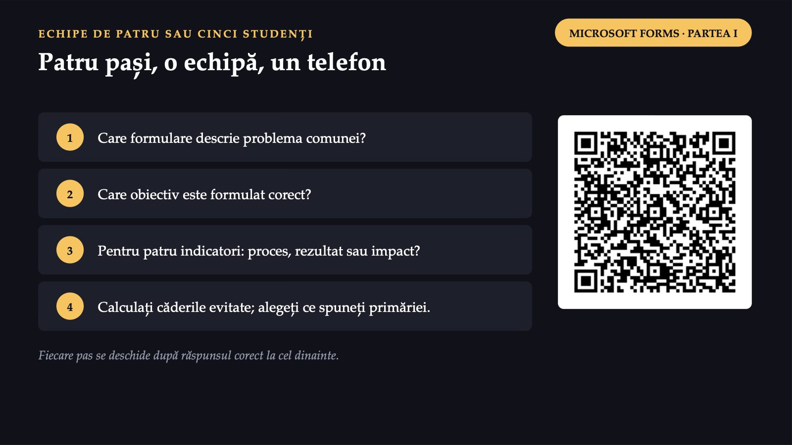
14 / 25Răspunsul apare după ședință
Răspunsul apare după ședință
Nouă oameni, aproape toți femei
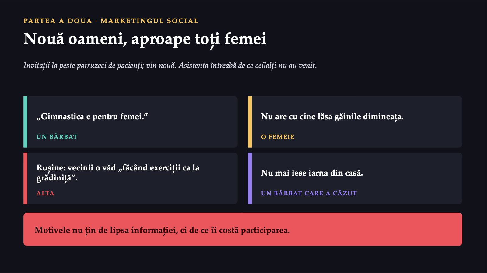
16 / 25Marketingul social și schimbul
 17 / 25
17 / 25Produsul, prețul, locul, promovarea
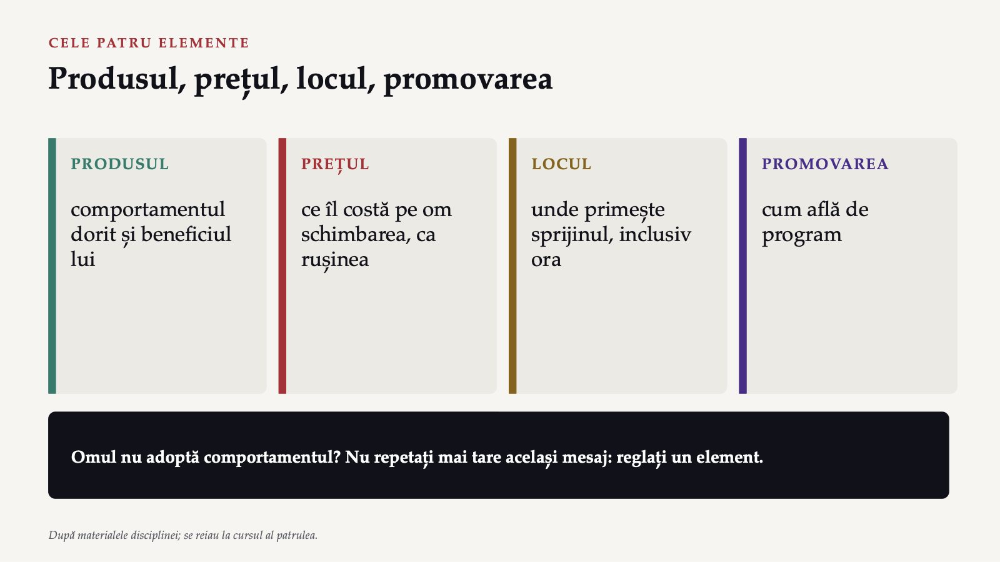
18 / 25Invitația în douăzeci de cuvinte
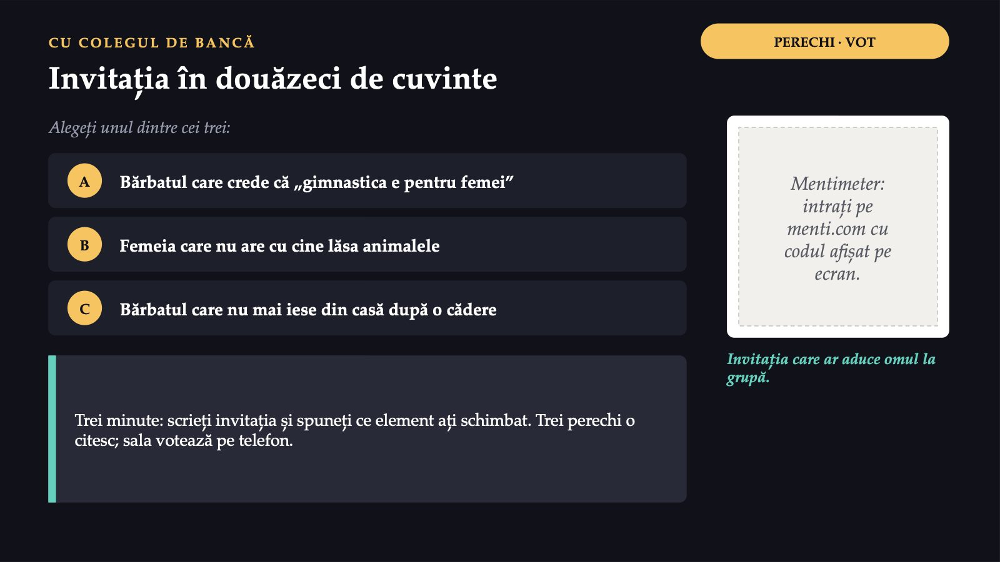
19 / 25Patru obstacole, patru elemente
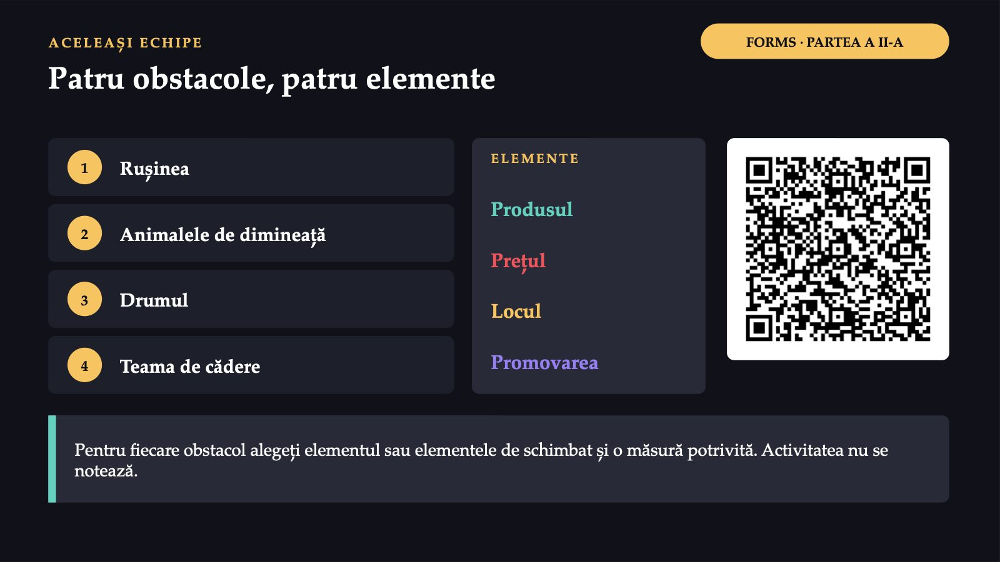
20 / 25Răspunsul apare după ședință
Răspunsul apare după ședință
Patru teme din recuperare
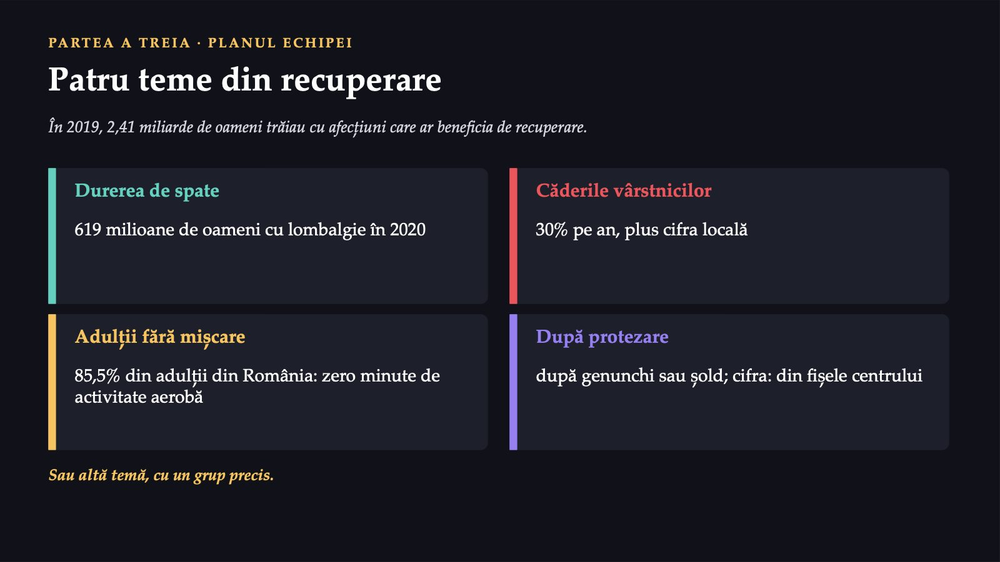
22 / 25Planul echipei, în unsprezece rubrici
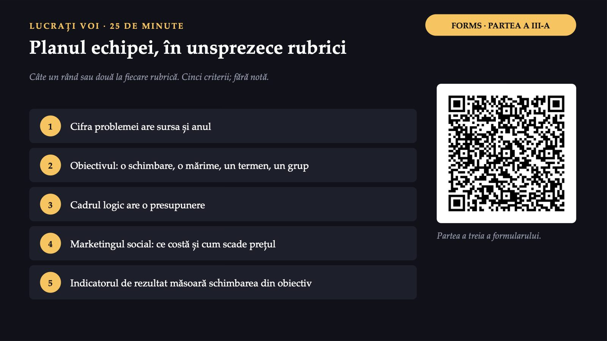
23 / 25Trei minute pentru fiecare plan
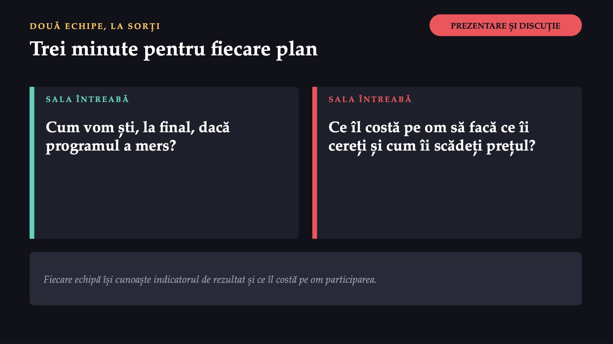
24 / 25Ce a fost util azi?
 25 / 25
25 / 25Săgeți sau spațiu: navigare · O: vedere de ansamblu · N: notele prezentatorului · F: ecran complet · Esc: închidere